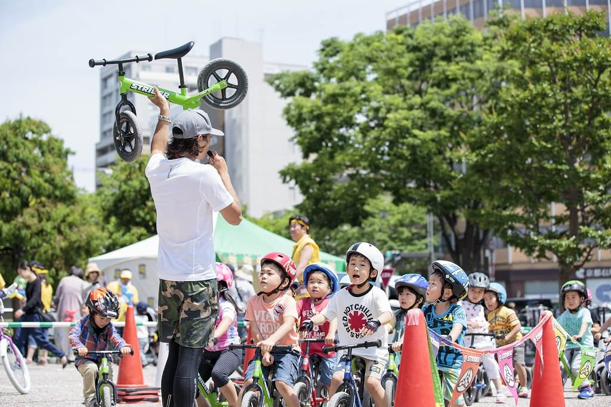

JKSA はじめて自転車教室・自転車スキルアップ
東京都板橋区赤塚公園で開催される「高島平カップ」内で、一般社団法人日本キッズバイク安全普及推進協会（以下JKSA）専門講師が教える「はじめて自転車教室」と「自転車安全スキル教室」を9月30日（土）に実施します。レースに参加されてない方でもご参加いただけます。他にも無料のランニングバイク試乗エリアもあるので、ぜひ会場に遊びに来てくださいね。

■はじめて自転車教室
ランニングバイクも上手に乗れるようになって、体も大きく成長し、そろそろ自転車にチャレンジしてみたいという子どもたちを対象にした自転車教室です。
子どもたちに楽しみながら学んでもらうことを第一に教えます。
自転車の乗り方だけでなく、保護者向けに安全ルールや気を付けるポイントも教えます。
◇開催日：2023年9月30日（土）
◇時 間：
はじめて自転車教室 1回目 10:00~10:45
はじめて自転車教室 2回目 13:00~13:45
◇場 所：東京都板橋区赤塚公園内特設会場 （東京都板橋区高島平3丁目1）
◇主 催：一般社団法人日本キッズバイク安全普及推進協会
◇対 象：4才～小学3年生ぐらい
◇定 員：事前受付 各回先着10名（定員に空きがある場合は当日受付けあり）
◇参加費：無料
◇その他：自転車、装備品（ヘルメット、手袋、ヒザヒジパッド）は無料で貸出し（自転車の持ち込みも可能です）
◇申 込：8月14日(月)午前10時受付開始（先着順）。9月14日(木)締切
▼応募はこちらから▼
https://forms.gle/AsV6nLFx7SLjkFxb8
※イベント内容やスケジュールは変更・中止となる場合もございます
※自転車乗車可能エリア以外では自転車から降りて押してご移動ください
※自転車やヘルメットはご持参された物でも参加可能です
■自転車安全スキル教室
正しい操作方法を学び基礎的なスキルを得る事で、自転車の楽しさや魅力を感じてもらい、 事故や怪我から自分の身を守るための教室です。
スクールでは「ブレーキの掛け方」「バランスの取り方」「ハンドルの操作」など、 基礎動作を中心に指導します。
安全確保には基礎の操作スキルが重要となりますので、“基礎” にバリエーションを付けて楽しい内容で指導します。
◇開催日：2023年9月30日（土）
◇時 間：自転車安全スキル教室 1回目 11:00~11:45
自転車安全スキル教室 2回目 14:00~14:45
◇場 所：東京都板橋区赤塚公園内特設会場 （東京都板橋区高島平3丁目1）
◇主 催：一般社団法人日本キッズバイク安全普及推進協会
◇対 象：4才～小学3年生までの自転車に乗れる方
◇定 員：事前受付 各回先着10名（定員に空きがある場合は当日受付けあり）
◇参加費：無料
◇その他：自転車、装備品（ヘルメット、手袋、ヒザヒジパッド）は無料で貸出し（自転車の持ち込みも可能です）
◇申 込：
8月14日（月）午前10時受付開始（先着順）。9月14日(木)締切
▼応募はこちらから▼
https://forms.gle/AsV6nLFx7SLjkFxb8
※イベント内容やスケジュールは変更・中止となる場合もございます
※自転車乗車可能エリア以外では自転車から降りて押してご移動ください
※自転車やヘルメットはご持参された物でも参加可能です
お問い合わせ先
一般社団法人日本キッズバイク安全普及推進協会
03-6435-4517
■講師情報
有薗 啓剛（ありぞの けいごう）
京都府出身。バイクトライアル1996年世界チャンピオン、8年連続全日本タイトルを保持。その後、マッスルミュージカル、シルク・ドゥ・ソレイユなどに出演。
全国の幼稚園や保育園での早期二輪車安全指導を実施している。